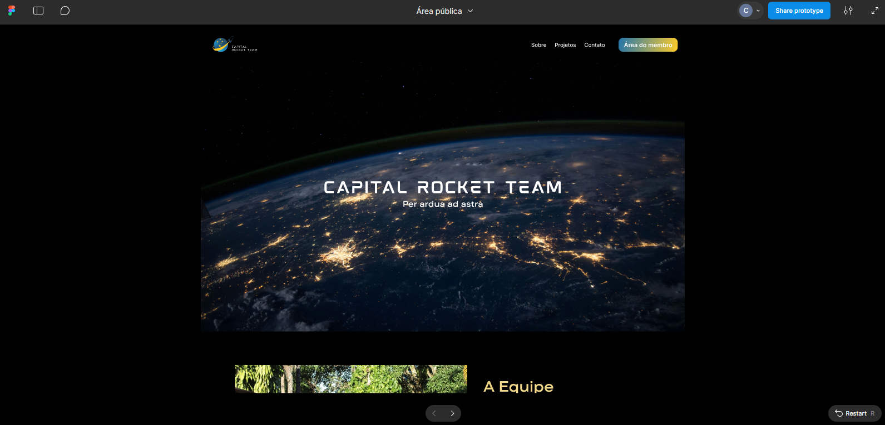

Evidências da Engenharia de Requisitos
🔍 Elicitação e Descoberta
Entrevistas e Reuniões com Cliente
| Data | Tipo | Participantes | Objetivo/Descrição |
|---|---|---|---|
| 01/04 | Kick off | Cliente Filipe, equipe | Alinhamento de expectativas, definição de objetivos e escopo, entrevista aberta |
| 15/05 | Reunião | Cliente, equipe | Atualização do andamento do projeto, disponibilização do documento de visão |
| 21/05 | Reunião | Cliente, equipe, marketing | Discussão sobre área interna, definição de template de dashboard |
| Diversas | Conversas assíncronas | Cliente, equipe | Validação e dúvidas tiradas via WhatsApp |
A reunião de Kick-off foi realizada no dia 01/04, com o cliente Filipe, na plataforma Teams. O objetivo foi realizar alinhamento de expectativas, definir objetivos e escopo do projeto. Foi feita uma entrevista aberta. A partir disso, a equipe começou a trabalhar no levantamento de requisitos. Dúvidas foram tiradas nos dias posteriores por WhatsApp com o cliente.
No dia 15/05, foi realizado mais uma reunião com o cliente para atualizar o cliente do andamento do projeto e foi disponibilizado o documento de visão do produto elaborado até então para o acesso do próprio e também verificar alguns pontos importantes definidos.
No dia 21/05 foi feito uma reunião com o cliente e um membro de marketing da equipe para tratar da área interna, e foi acordado a utilização de um template de dashboard para a área interna da plataforma.
A equipe começou a configuração do ambiente e a trabalhar os critérios de aceitação no formato BDD junto com o cliente para o desenvolvimento dos requisitos, as validações foram feitas por meio do WhatsApp.
User Stories para Elicitação
Foi utilizado User Story como técnica para elicitar e descobrir os requisitos a partir do ponto de vista do usuário, garantindo foco nas necessidades reais dos stakeholders. Veja aqui o backlog completo
🤝 Análise e Consenso
Reuniões de Validação e Refinamento
| Data | Tipo | Participantes | Objetivo/Descrição |
|---|---|---|---|
| 25/04 | Reunião | Cliente, equipe | Análise e consenso do backlog inicial, validação e correção de requisitos |
No dia 25/04, foi feita reunião com o cliente para a análise e consenso do backlog inicial levantado durante as duas semanas em que estivemos trabalhando. Algumas coisas precisaram ser corrigidas e a maioria dos requisitos levantados inicialmente foram validados.
Análise de Domínio de Requisitos
Foi utilizada análise de domínio de requisito para resolver contradições, eliminar ambiguidades e complementar informações ausentes nos requisitos elicitados. Essa análise foi feita em conjunto com o cliente na reunião acima e por mensagens via WhatsApp.
Prompt IA para Análise
O Prompt IA foi utilizado para fazer uma análise dos requisitos, resolver contradições e alinhar as perspectivas, de uma forma mais direta e eficiente.
🎨 Representação de Requisitos
Prototipação Navegável
Para a área pública da plataforma, foi feito um protótipo navegável do Figma, disponível aqui.

Entrega e Validação do Protótipo
| Data | Tipo | Participantes | Objetivo/Descrição |
|---|---|---|---|
| 16/05 | Entrega protótipo | Cliente, equipe | Entrega e validação do protótipo da área pública/site |
📝 Declaração de Requisitos
Documento de Visão
Os requisitos estão declarados no Documento de Visão disponível no GitPages do projeto em Backlog Geral.
User Stories e Estruturação
Os requisitos foram declarados usando User Story, Épicos e Features, garantindo foco em entregas de valor sob a perspectiva do usuário.
Critérios de Aceitação BDD
A equipe começou a trabalhar os critérios de aceitação no formato BDD junto com o cliente para o desenvolvimento dos requisitos, as validações foram feitas por meio do WhatsApp.
✅ Verificação e Validação de Requisitos
Revisões em Pares
As revisões em pares estão sendo feitas pela abertura dos Pull Requests no repositório do projeto. Tanto a branch main quanto a develop estão protegidas e os membros precisam de um approve para poder subir suas alterações. As revisões são feitas a partir do DoR e DoD.
Exemplos de Pull Requests:
Feedback Contínuo com Cliente
Foi utilizada a técnica de feedback com a CRT para manter um backlog de produto verificado e validado de acordo com as necessidades da solução. Validações constantes foram realizadas via WhatsApp.
Implantação e Validação Final
| Data | Tipo | Participantes | Objetivo/Descrição |
|---|---|---|---|
| 21/06 | Reunião presencial | Cliente, líder da equipe | Implantação da área pública, cadastro do administrador, configuração de IP/domínio |
No dia 21/06 o cliente se reuniu presencialmente com a líder da equipe para conversar sobre a implantação da área pública. O cliente validou o protótipo e a área pública foi implantada no site.
🔄 Organização e Atualização de Requisitos
Priorização MoSCoW
| Data | Tipo | Participantes | Objetivo/Descrição |
|---|---|---|---|
| 01/05 | Reunião | Cliente, equipe | Priorização dos requisitos com método MoSCoW |
No dia 01/05, foi feita uma reunião com o cliente para realizar a priorização dos requisitos com o método MoSCoW.
Matriz de Priorização
Foi utilizada a técnica matriz de priorização para definir os requisitos do MVP, considerando esforço técnico e classificação MoSCoW.
Feedback para Atualização
Conforme o feedback do cliente, os requisitos foram sendo atualizados continuamente para garantir entregas de valor alinhadas com as necessidades da Capital Rocket Team.
📜 Histórico de Versão
| Data | Versão | Descrição | Autor |
|---|---|---|---|
| 23/06/25 | 0.1 | Evidências | Sophia |
| 13/07/25 | 0.2 | Refinando visualmente o documento | Wanjo Christopher |
| 13/07/25 | 1.0 | Organizando evidências por processos de negócio e ajustando formatação | Sophia |
| 13/07/25 | 1.1 | Refinando visualmente o documento | Wanjo Christopher |
| 13/07/25 | 2.0 | Organizando evidências para cada um dos 6 processos de ER e técnicas utilizadas | Wanjo Christopher |